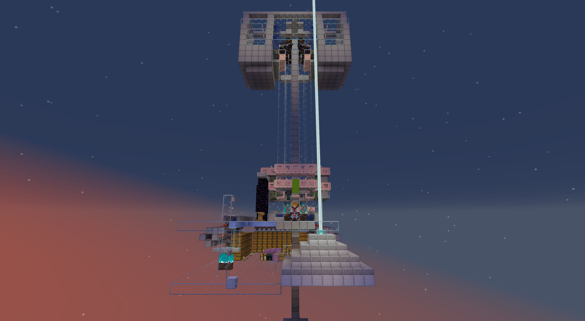
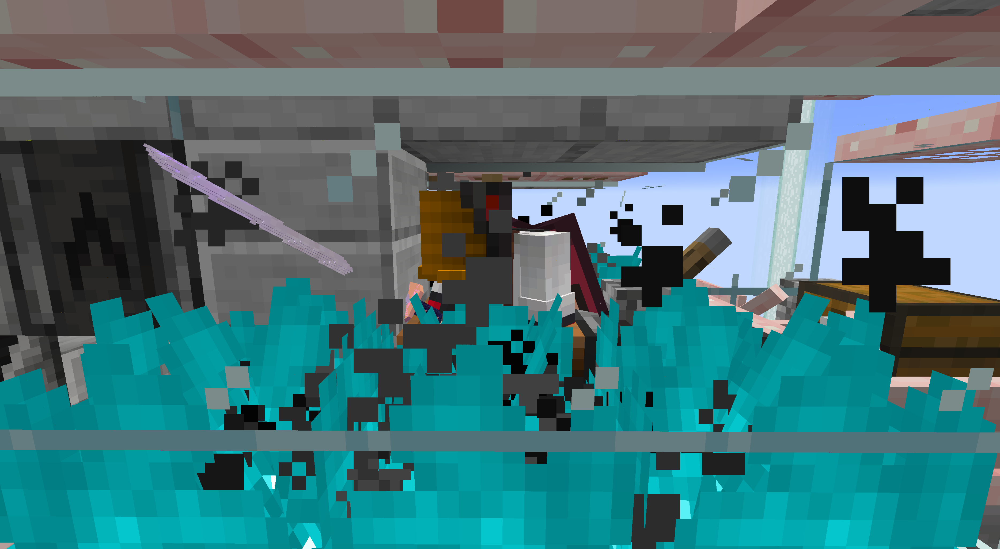
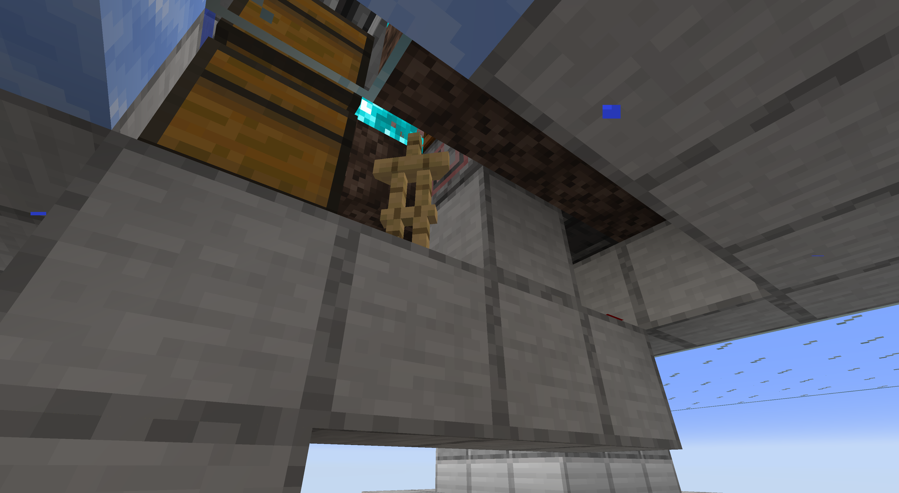

Loading header...
MLSY-袭击塔
全自动挂机、手砍迁移袭击塔，设计来源：黑山大叔 ，附带收集，并针对服务器做了稳定性优化。
机器清单

机器照片
是否公开
是
建造者
所有者
产物和每小时产量
| 产物 | 产量（每小时）（此值为黑山大叔原型机实测中的较高值，服务器实装版本未测） |
|---|---|
| 绿宝石 | 14.22w |
| 木棍 | 2.58w |
| 灾厄旗帜 | 2.38w |
| 不死图腾 | 2.33w |
| 蜘蛛眼 | 1.32w |
| 玻璃瓶 | 1.31w |
| 糖 | 1.31w |
| 火药 | 1.30w |
| 荧石粉 | 1.30w |
| 红石粉 | 1.29w |
| 弩 | 8.10k |
| 铁斧 | 6.48k |
| 药水 | 1.77k |
| 鞍 | 78 |
是否抗卸载
否
最少挂机人数
1
需要的mod
- Tweakeroo
需要自带的原材料
维护人员
机器坐标
Factory: (-1494, 201, 484)
如何从工厂出生点前往？
工厂出生点 -> 星门：工厂网络 -> MLSの火柴盒 -> 参考右手边的地图，飞向目的地
机器教程
开机流程
1. 自行获取不祥之兆 buff，推荐公共哨站
2. 站在箱船上，用头顶的活板门将自己拍趴下
3. 爬进粪桶，成站立姿势，注意关闭伪潜行
4. 转身拨动一下拉杆，再转回来，面朝正南方
5. 完全低头，确保袭击进度条满后，以 60gt 每下的速度砍盔甲架

正确挂机姿势
尽量保持挥砍不要被其他操作中断，如打开聊天栏、打开物品栏、ESC 等。
关机流程
1. 砍爆盔甲架
2. 转头，坐上箱船
3. 退出箱船，向后爬出挂机点
4. 拨回头顶的活板门
5. 坐地狱门后的电梯下楼，取挂机资源
故障自查
1. 刚启动时出怪较少较慢为正常现象，若 2 分钟后仍然如此甚至断流，尝试重开
2. 若拨动拉杆后未发射出盔甲架，请下楼补充

盔甲架补充点位，图中发射器里（XK 材质包）
3. 其他故障，有能力者可自修，否则请联系维护人员
目录